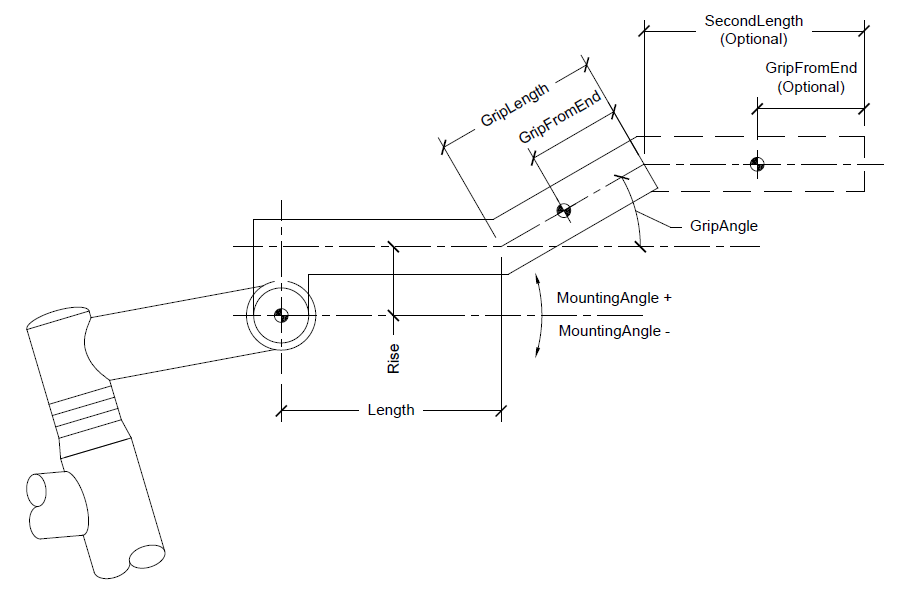

The aero bar is designed to emulate variants of aero bars: clip-on single segment with grip area, two parallel offset bars, and bullhorn bars.
This is mounting angle of the aero bar.
This is the length of the fist segment of the bar.
This is the distance from the mounting center to the first segment in the vertical axis. This can also be set to a negative value to bring the first segment below the mounting center.
This is the length of the grip segment.
This is angle of th grip segement measured from horizontal. If there is a second segment, than this is the transition segment.
This is the length of the optional second segment. It is always parallel to the first segment. If this segment is present, than the grip segment becomes the transition segment.
This is the distance from the end of the bar the hand position is placed at. If this distance is greater than the segment length, the hand position moves to the next segment.